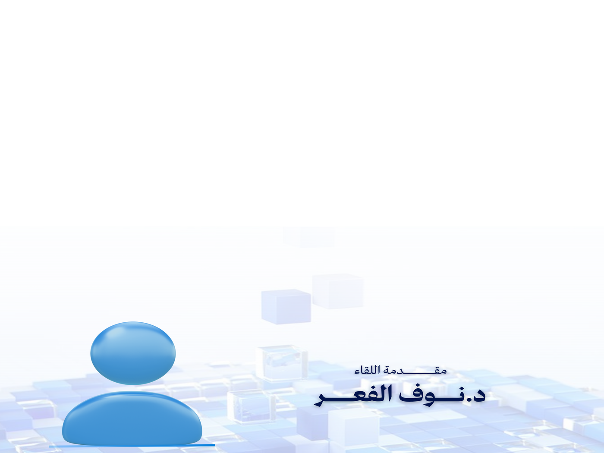

لقاء معرفي
مقدمة بالذكاء الاصطناعي وأدواته العلمية
لقاء تمهيدي يعرّف المشاركين بمفاهيم الذكاء الاصطناعي، أنواعه، ومجالات استخدامه، مع استعراض لأهم الأدوات والمنصات التي تدعم التعلم والتجربة للطلاب والطالبات في مختلف التخصصات.